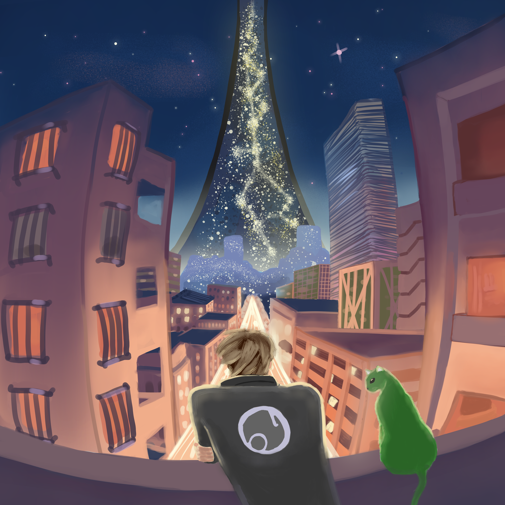
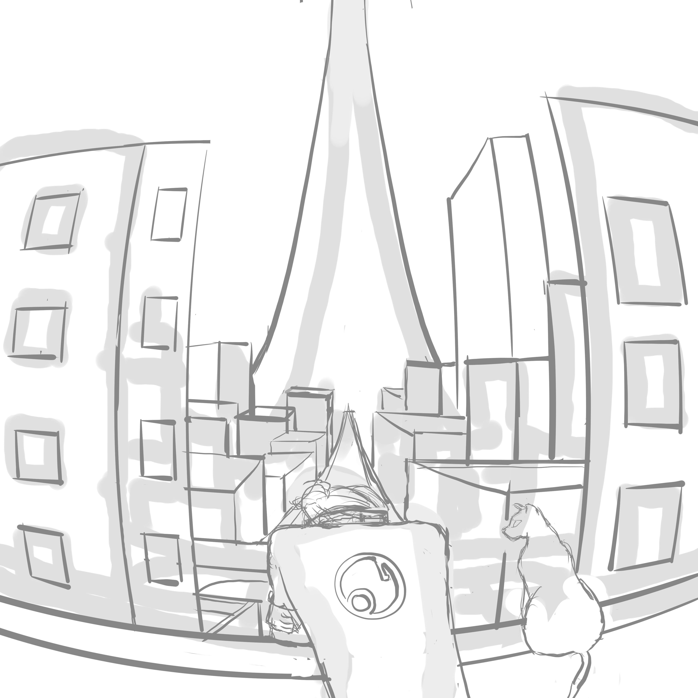
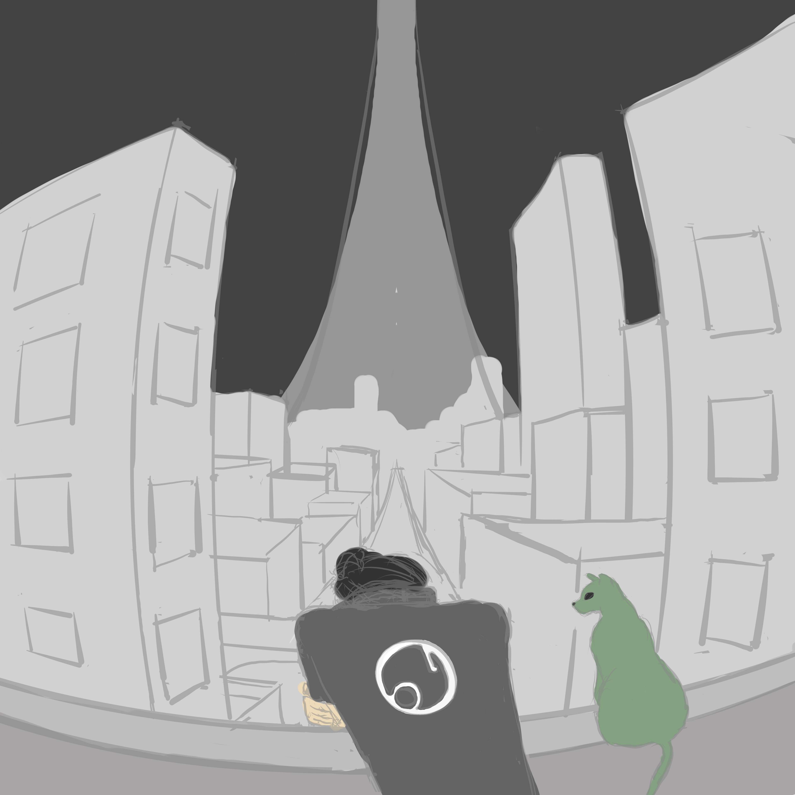
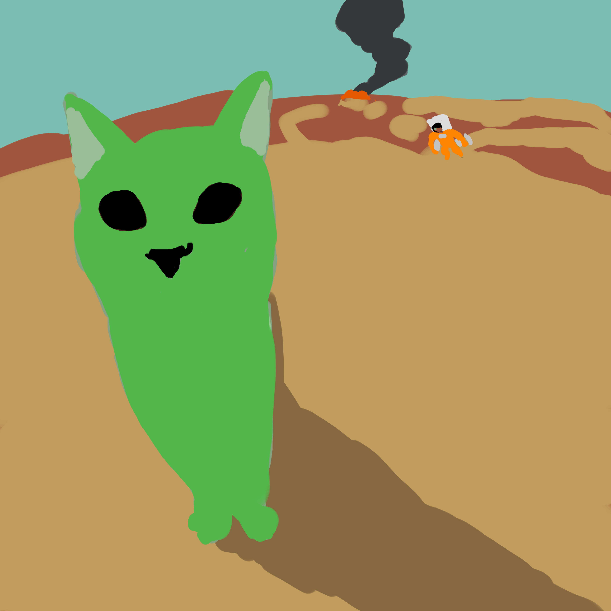
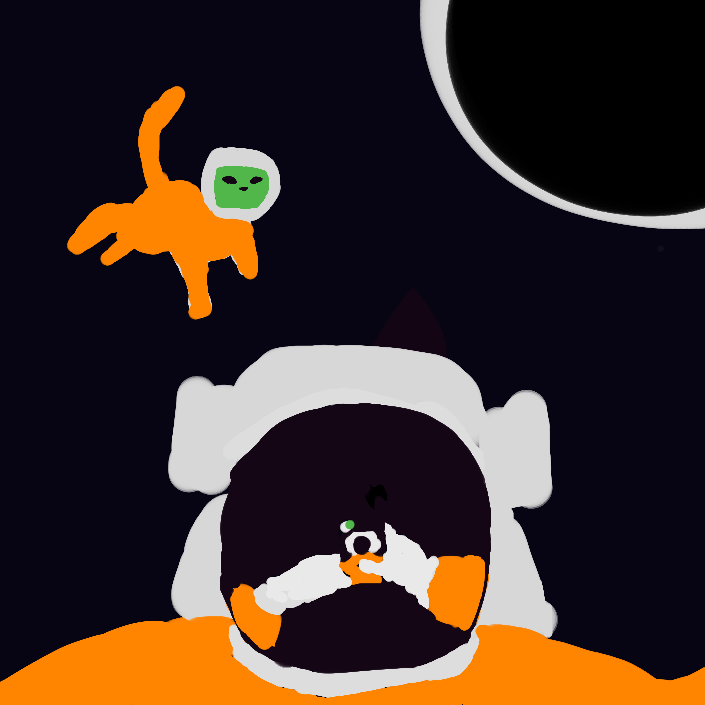

Ringworld Illustration
An illustration part of a series of 3. This illustration focuses heavily on perspective and color palette. It was my first time trying fisheye perspective so it was a challenge. If I were to re-do it, I would put more time into the sketch phase, planning out details better. Created using Clip Studio Paint.
Project Details:
- Date: October 2024
- Role: Painter/Illustrator





See more >